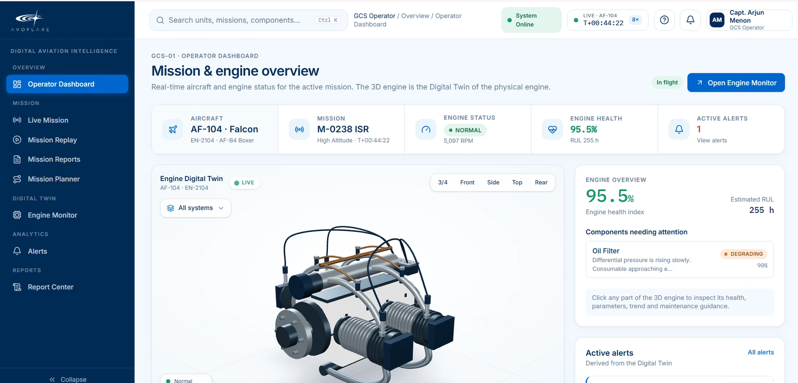
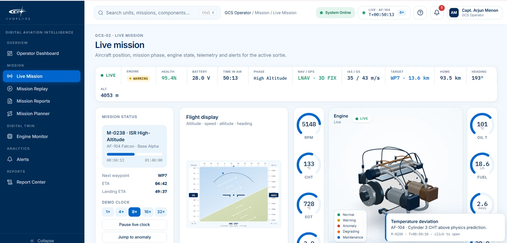
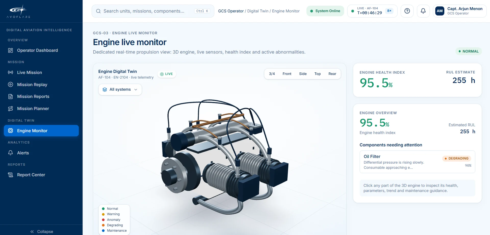
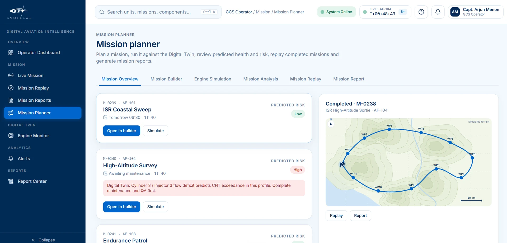
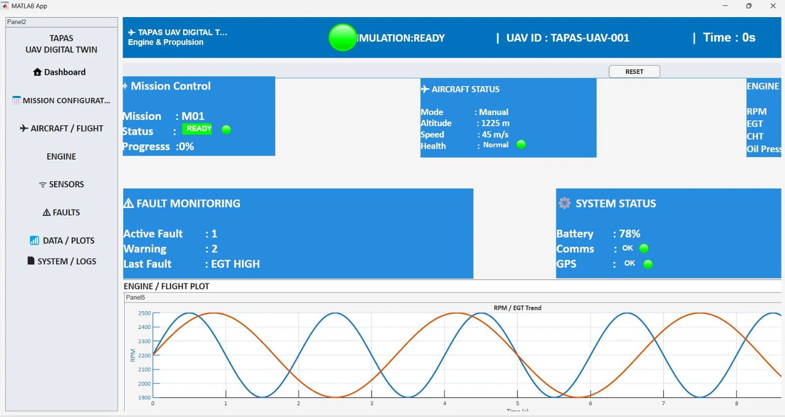

AVOFLARE
AVOFLARE


Intelligence inEvery Flight.
A digital twin rides along with the UAV's piston engines, catches a fault on board before it grows, and keeps judging even when the link to the ground is lost.
Most monitors speak up after the fault begins.
Problem Statement 26054 asks for a real-time digital twin of the piston engines in a MALE UAV, one that sees trouble coming.
What changes, and how far AVOFLARE has come on each requirement.
Alarm after the fault
Warning before it
Fixed limits
A live virtual engine
No view of wear
Remaining life, predicted
Requirements A–F
- 1 built
- 4 partly
- 1 designed
Requirement A: Digital twin core
Engine model and healthy runPartly builtRequirement B: Health monitoring
6 of 8 parameters on CANPartly builtRequirement C: Fault detection
52 fault types simulatedPartly builtRequirement D: AI/ML layer
Edge AI and GCS AIDesignedRequirement E: Simulation & replay
10 mission profilesBuiltRequirement F: Dashboard
MATLAB dashboard, web replayPartly built
From engine to engineer, even when the link drops.
Follow one simulated fault from the exhaust sensor, through the on-board AI and a lost link, to the engineer's decision.
Before, during and after every flight.
One system follows the engine on the ground, in the air and back again, with the link up or down. Mission pre-simulation and replay are built today; the rest is designed.
03 · WHAT WE BUILT
What we built, and what runs today.
Five working pieces, from the engine and mission simulation to the ground-station dashboard. All of it runs on simulated data.
Mission and engine overview, with the 3D engine twin.




FIRST PROTOTYPE
Where the dashboard began.
The first MATLAB app for the digital twin: mission control, aircraft status, fault monitoring and a live RPM and EGT plot.
Drag to compare it with today's dashboard.

THEN · MATLAB APPNOW · GCS DASHBOARDTELEMETRY
Every sample leaves the engine as CAN frames.
FAULT INJECTION
Seven faults, injected one after another.
Each fault runs for 12 minutes. A reading turns to warning when it crosses its limit and stays there, and to critical when it goes further. The first minute after start-up is ignored.
SIMULATED · MATLAB RUN V5704 · WHAT'S NEW
What's new, and what comes next.
Three ideas that change how engine health is watched, and two that come next. Each one answers an innovation area in the problem statement.
-
Physics and data check each other.
A physics model of the engine predicts what each reading should be. The measured value runs beside it. When the two drift apart and stay apart, the gap itself becomes the early warning.
Physics-informed AI · Hybrid thermodynamic and data-driven models
-
Every alert explains itself.
An alert never arrives alone. It opens into its reasons: which reading moved, how far from the twin, how many sensors agree, and how sure the system is.
Explainable AI for fault diagnosis
-
The engineer decides.
The system recommends; a person approves. Nothing reaches the maintenance plan until the engineer says so. Try it on the panel.
Autonomous maintenance advisory, with human authority
-
Coming next: trusted links, shared learning.
Telemetry that is signed on the aircraft and checked on arrival. A fleet that improves one shared model while each aircraft keeps its raw data.
Secure telemetry architecture · Federated learning
- ReadingCylinder-head temperature is running above the twin's prediction.
- DurationThe gap has held for several minutes, not a single spike.
- AgreementRelated sensors move the same way.
- TrendStill rising.
RECOMMENDATION
Inspect the cylinder 3 injector before the next flight.
Based on the alert and its reasons.
Waiting for the engineer
05 · DEMO
Watch it fly.
The full loop, from mission set-up to the engineer's decision.
CHAPTERS
Chapter titles describe the recorded demo. The footage shown now is a placeholder cut from the site's own clips.
06 · ROADMAP
From simulation to the flight line.
The prototype runs in simulation. Next it moves onto real hardware, a real engine and a real ground station.
PHASE 01Completed
Prototype
It runs, in simulation.
- Engine and mission simulation in MATLAB/Simulink
- Fault injection runs
- CAN telemetry in software
- Ground-station dashboard, on demo data
- First MATLAB app
PHASE 02In progress
Edge and AI
The intelligence moves on board.
- Raspberry Pi 5 with a CAN interface on the aircraft side
- Physics-vs-measured check
- Alerts that explain themselves
- Remaining-life estimate
- Dashboard on live simulated data
PHASE 03Next
Test rig and ground station
Real engine, real ground station.
- Engine test rig with the real ECU/FADEC and CAN, hardware in the loop
- Twin checked against real engine data
- Defence-grade ground control station
- Secure telemetry: encryption, role-based access, integrity checks
PHASE 04Later
Fleet
From one aircraft to many.
- Fleet-wide health dashboard
- Shared learning across aircraft, without sharing raw data
- Twin adaptable to other engines
- Maintenance (MRO) integration
The twin keeps learning: every flight improves the models and adds to the knowledge base.
07 · WHY AVOFLARE
Why AVOFLARE, and why now.
The engine is the part most likely to fail, and today the warning comes late. Here is why that should change, and why with AVOFLARE.
THE STAKES
of failures in one widely used piston-engine UAV came from the powerplant.
mean time between failures for that same aircraft.
When the engine is the weak point, watching it closely is not optional.
THE COST OF FINDING OUT LATE
A threshold alarm fires at the failure. A trend warning fires before it.
Fixed alarm limits only trip once a reading is already out of bounds. Watching the trend against the twin gives the crew and the engineer time to act.
WHY IT FITS DEFENCE
Made for how military UAVs actually fly.
- DESIGNED
Keeps working when the link drops
The on-board AI goes on watching the engine and deciding, then syncs with the ground when the link returns.
- DESIGNED
Every alert explains itself
Each warning comes with the reading that moved, how far, and how sure the system is. Trust you can check.
- DESIGNED
The engineer has the final say
AVOFLARE recommends. A person approves. Nothing reaches the maintenance plan on its own.
- PLANNED
Secure telemetry
Encrypted transfer, role-based access and integrity checks on every packet.
- DESIGNED
Fits what you already fly
Built around CAN, the ECU/FADEC and the ground control station, so switching costs little.
Built in India
Indigenous engine intelligence for Indian MALE UAVs, in line with Atmanirbhar Bharat.
WHO GAINS
Pick a role.
Maintenance technician
Less troubleshooting. A targeted plan says which part to check, and why.
Designed benefits, not yet measured in service.WHY NOW
DRDO has begun sharing TAPAS technology with Indian industry ahead of a tri-services tender for 87 MALE UAVs, estimated at over ₹25,000 crore. The engines those aircraft fly on will need watching.
Source · Raksha Anirveda, 6 May 2026